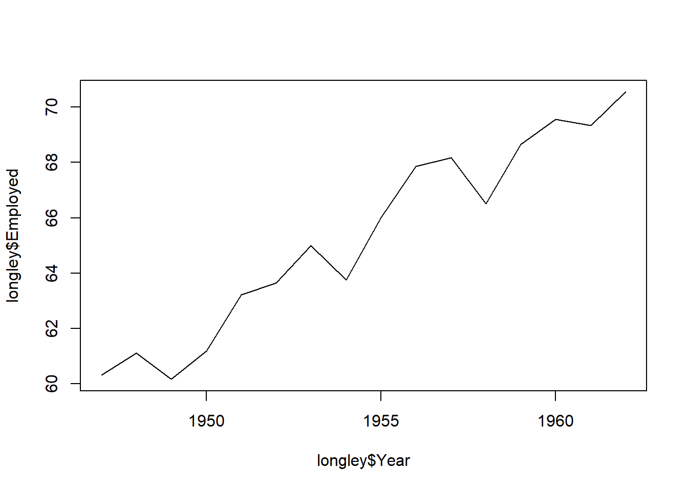

Chapter 2 Describing Data,
2.1 Seminar
We set our working directory. R operates in specific directory (folder) on our computer. We create a folder on our computer where we save our scripts for our statistics 1 class. We name the folder stats1. Let’s create the folder on our computers now (in finder on Mac and explorer on Windows).
Now, we set our working directory to the folder, we just created like so:

2.1.1 atze peng
- Create a new R script and save it as week2.R to your preferred directory.
- Now type the following commands in the new file you just created:
Save your script, and re-open it to make sure your changes are still there. Then check your workspace.
# check workspace
ls()
# delete variable 'a' from workspace
rm(a)
# delete everything from workspace
rm( list = ls() )
# to clear console window press Crtl+l on Win or Command+l on MacLast week we have already worked with vectors. We created a sequence for example. This week, we have a look at element-wise operations and we see how to access elements within a vector.
We create a vector using the c() function, where c stands for collect.
# Create a vector
my.vector <- c(10,7,99,34,0,5) # a vector
my.vector[1] 10 7 99 34 0 5Let’s see how many elements our vector contains using the length() function.
length(my.vector) # how many elements?[1] 6Next, we access the first element in our vector. We use square brackets to access a specific element. The number in the square brackets is the vector element that we access
# subsetting
my.vector[1] # 1st vector element[1] 10To access all elements except the last element we use the - operator.
my.vector[-1] # all elements but the 1st[1] 7 99 34 0 5We can access elements 2 to 4 by using the colon.
my.vector[2:4] # the 2nd to the 4th elements[1] 7 99 34If we want to see to specific non-adjacent elements, we can use the collect function c().
my.vector[c(2,5)] # 2nd and 5th element[1] 7 0No, we combine the length() function with the square brackets to access the last element in our vector.
my.vector[length(my.vector)] # the last element[1] 52.1.2 data frames
A data frame is an object that holds data in a tabular format similar to how spreadsheets work. Variables are generally kept in columns and observations are in rows.
Before we work with ready-made data, we create a small dataset ourselves. It contains the populations of the sixteen German states. We start with a vector that contains the names of those states. We call the variable state. Our variable shall contain text instead of numbers. In R jargon this is a character variable, sometimes referred to as a string. Using quotes, we indicate that the variable type is character. We use the c() function to create the vector.
# create a character vector containing state names
state <- c(
"North Rhine-Westphalia",
"Bavaria",
"Baden-Wurttemberg",
"Lower Saxony",
"Hesse",
"Saxony",
"Rhineland-Palatinate",
"Berlin",
"Schleswig-Holstein",
"Brandenburg",
"Saxony-Anhalt",
"Thuringia",
"Hamburg",
"Mecklenburg-Vorpommern",
"Saarland",
"Bremen"
)Now, we create a second variable for the populations. This is a numeric vector, so we do not use the quotes.
population <- c(
17865516,
12843514,
10879618,
7926599,
6176172,
4084851,
4052803,
3670622,
2858714,
2484826,
2245470,
2170714,
1787408,
1612362,
995597,
671489
)Now with both vectors created, we combine them into a dataframe. We put our vectors in and give them names. In this case the variable names in the dataset correspond to our vector names. The name goes in front of the equal sign and the vector object name, after.
popdata <- data.frame(
state = state,
population = population
)You should see the new data frame object in your global environment window. You can view the dataset in the spreadsheet form that we are all used to by clicking on the oject name.
We can see the names of variables in our dataset with the names function
names(popdata)[1] "state" "population"Let’s check the variable types in our data using the str() function.
str(popdata)'data.frame': 16 obs. of 2 variables:
$ state : Factor w/ 16 levels "Baden-Wurttemberg",..: 10 2 1 8 7 13 11 3 15 4 ...
$ population: num 17865516 12843514 10879618 7926599 6176172 ...The variable state is a factor variable. R has turned the character variable into a categorical variable automatically. The variable population is numeric. These variable types differ. We can calculate with numeric variables only.
Often we want to access certain observations (rows) or certain columns (variables) or a combination of the two without looking at the entire dataset all at once. We can use square brackets to subset data frames. In square brackets we put a row and a column coordinate separated by a comma. The row coordinate goes first and the column coordinate second. So popdata[10, 2] returns the 10th row and third column of the data frame. If we leave the column coordinate empty this means we would like all columns. So, popdata[10,] returns the 10th row of the dataset. If we leave the row coordinate empty, R returns the entire column. popdata[,2] returns the second column of the dataset.
We can look at the first five rows of a dataset to get a better understanding of it with the colon in brackets like so: popdata[1:5,]. We could display the second and fifth columns of the dataset by using the c() function in brackets like so: popdata[, c(2,5)].
It’s your turn. Display all columns of the longley dataset and show rows 10 to 15. Next display all columns of the dataset and rows 4 and 7.
popdata[10:15, ] # elements in 10th to 15th row, all columns state population
10 Brandenburg 2484826
11 Saxony-Anhalt 2245470
12 Thuringia 2170714
13 Hamburg 1787408
14 Mecklenburg-Vorpommern 1612362
15 Saarland 995597popdata[c(4, 7), ] # elements in 4th and 7th row, all column state population
4 Lower Saxony 7926599
7 Rhineland-Palatinate 4052803In order to access individual columns of a data frame we can also use the dollar sign $. For example, let’s see how to access the population column.
popdata$population [1] 17865516 12843514 10879618 7926599 6176172 4084851 4052803
[8] 3670622 2858714 2484826 2245470 2170714 1787408 1612362
[15] 995597 671489Now, access the state column.
popdata$state [1] North Rhine-Westphalia Bavaria Baden-Wurttemberg
[4] Lower Saxony Hesse Saxony
[7] Rhineland-Palatinate Berlin Schleswig-Holstein
[10] Brandenburg Saxony-Anhalt Thuringia
[13] Hamburg Mecklenburg-Vorpommern Saarland
[16] Bremen
16 Levels: Baden-Wurttemberg Bavaria Berlin Brandenburg Bremen ... Thuringia2.1.3 Loading data
We often load existing data sets into R for analysis. Data come in many different file formats such as .csv, .tab, .dta, etc. Today we will load a dataset which is stored in R’s native file format: .RData. The function to load data from this file format is called: load(). If you managed to set your working directory correctly just now (setwd("~/PUBLG100")), then you should just be able to run the line of code below.
2.1.4 Plots
Now let’s create some plots from the longley dataset. First let’s create a scatterplot with the Year variable on the x-axis and Employed on the y-axis.
plot(x = longley$Year,
y = longley$Employed)To create a line plot instead, we use the same function with one additional argument type = "l".
plot(longley$Year, longley$Employed, type = "l")
Now it’s your turn.
- Use online help for the
plot()function and find out how to create a plot that includes both points and lines.
plot(longley$Year, longley$Employed, type = "b")
We want to describe the variable Employed which measures the number of people in employment. The variable is continuous. We first look at it’s central tendency and dispersion.
# central tendency
mean(longley$Employed)[1] 65.317# dispersion
sd(longley$Employed)[1] 3.511968Now let’s examine our variable visually. We can do so with the plot() function. To create a density plot like in the seminar, we use the density() function.
# density plot
plot(density(longley$Employed),
main = "Distribution of People in Employment", # title label
xlab = "Number of people employed", # x-axis label
bty = "n") # no box around the plot
2.1.5 Loading Data
2.1.6 Exercises
- Create a script and call it assignment02. Save your script.
- Use the
names()function to display the variable names of thelongleydataset. - Use square brackets to access the 4th column of the dataset.
- Use the dollar sign to access the 4th column of the dataset.
- Access the two cells from row 4 and column 1 and row 6 and column 3.
- Using the
longleydata produce a line plot with GNP on the y-axis and population on the x-axis. - Use the help function to find out how to label the y-axis “wealth” and the x-axis “population”.
- Save your script, which should now include the answers to all the exercises.
- Source your script, i.e. run the entire script without error message. Clean your script if you get error messages.